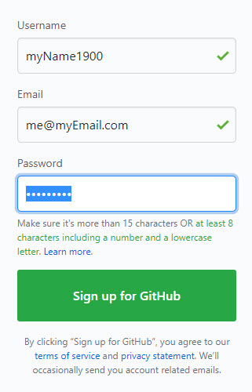
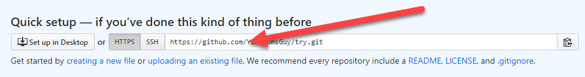

"Push" Repository To GitHub Repository
In order to "push" the project to external repository, we'll use GitHub
GitHub is a free OpenSource Largest Git repository
1. Create account in GitHub
- Go to
- Click the Sign Up Button
- Fill In your information and press the Button

- Answer the registration survey
- In first stage you may select the free account
- Verify the email
Thats it , you have a free account in GitHub
Back to the top of the page
2. Create a repository in GitHub
- Go to repositories page under your account
- From the top menu if the web-page
- From the account profile menu
- Click the "New" button
- Supply name & description
- Choose public/private (private repos has less abilities / used to be paid
- click the "Create repository" button
this will take you to the new repository page
you will see the Quick Setup section with the url of the git file

Copy the url to your clipboard
in this stage you may minimize/close the web-page
Back to the top of the page
3. Connect your project from VScode to GitHub
when it comes to connection between local Git and GitHub, there are to ways to start working:
- To send the new repository from GitHub to the local comuter
- To upload existing local project to the New Repository
GitHub ====> Local Repo
To download the Repo just created in GitHub to the computer
- In the Terminal window type in:
git clonehttps://github.com/.......... master
In the url, paste the url you copied to the clipboard from GitHub new repository
This will create a new folder in the local computer with the same name of the repo.
Local Computer ====> Repo
Back in VScode, open the project you want to send to GitHub
- make sure the project is: initialized, added and committed in the local repository
- to send the project to GitHub Repository type in:
git push --set-upstream https://github.com/.......... master
In the url, paste the url you copied to the clipboard from GitHub new repository
This will upload all the content of the project to GitHub new created repo.
From this point and on, after every
git commit -am "commitName"
you can decide to upload your project to GitHub
git push
Back to the top of the page
back to main page